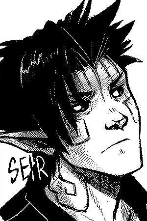
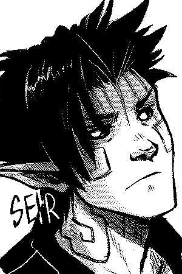

"Circa follows Montore's booming gang culture, during a time when tensions between humans and hegatas — descendants of beings whose existence predates that of humans — are high. Sy Cross thrives in climates like this, but things change when the fight hits a little too close to home."
 



This website has been designed to reduce the energy use associated with accessing online content. To do this, it was made into a static website (requires less processing power), and uses an image compression technique called dithering to reduce file size. It's drawn by hand, scanned and edited digitally using open-source software (GIMP & Krita) on Linux.
Last update: 09-03-20. Updated on Mondays.